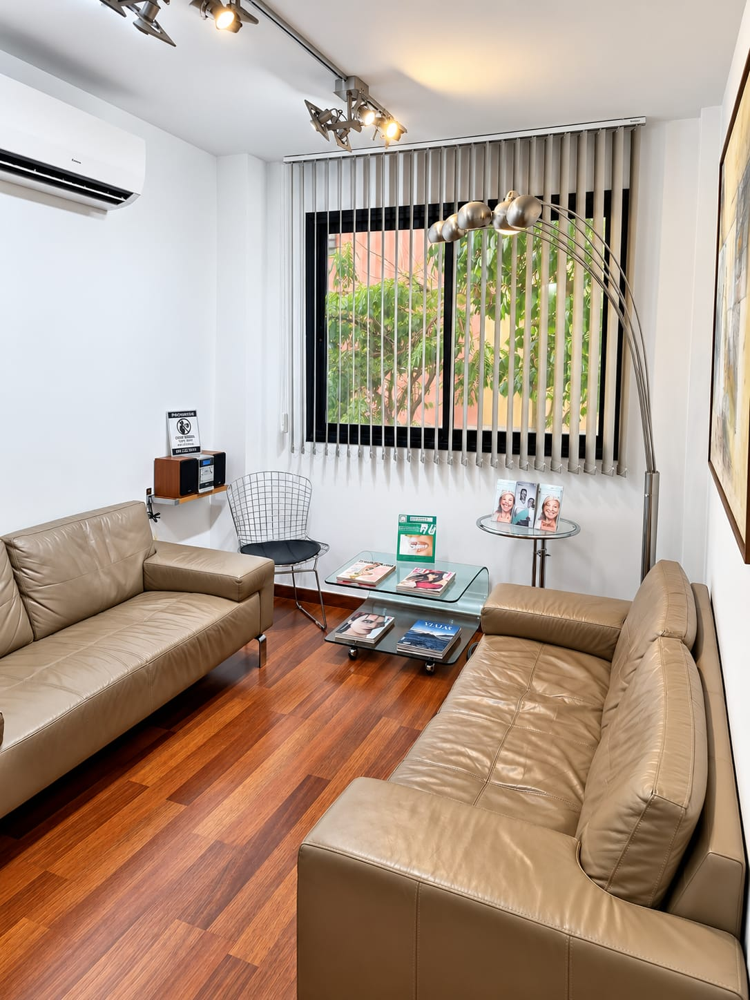
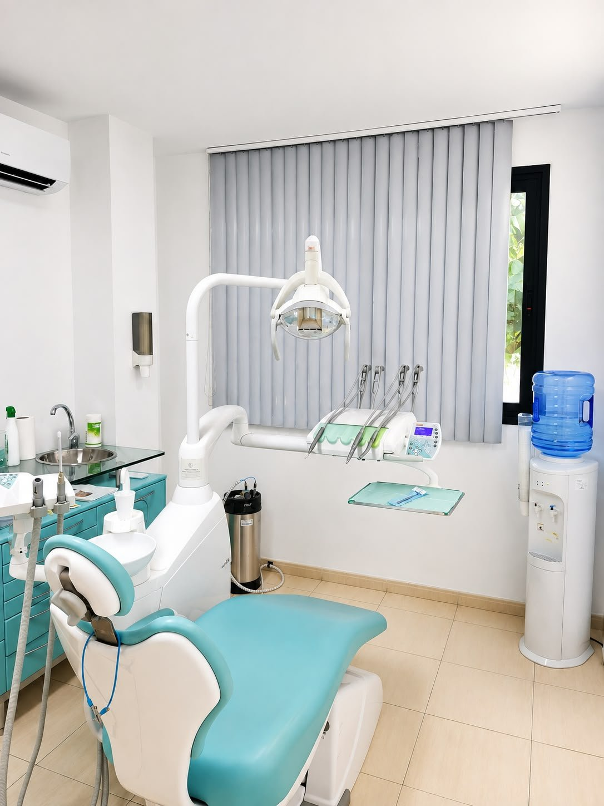
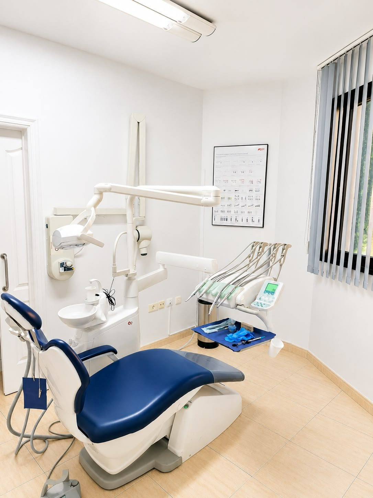
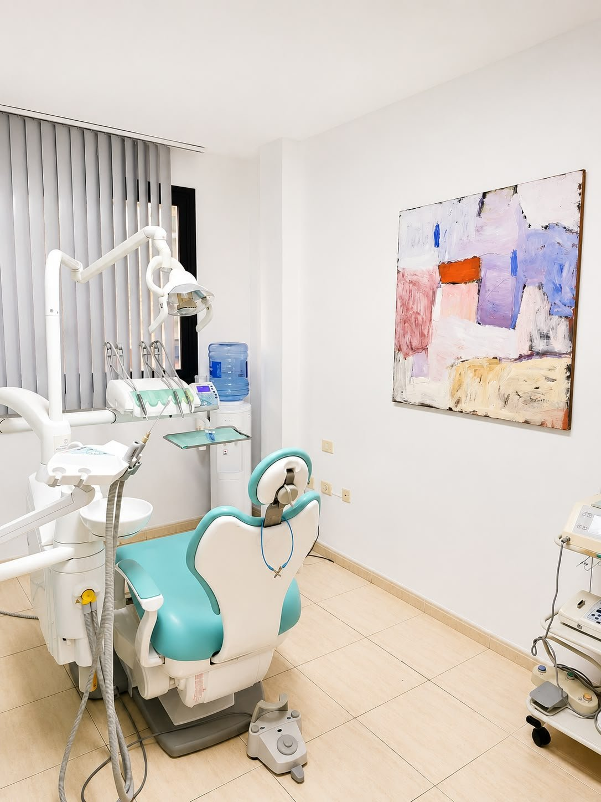
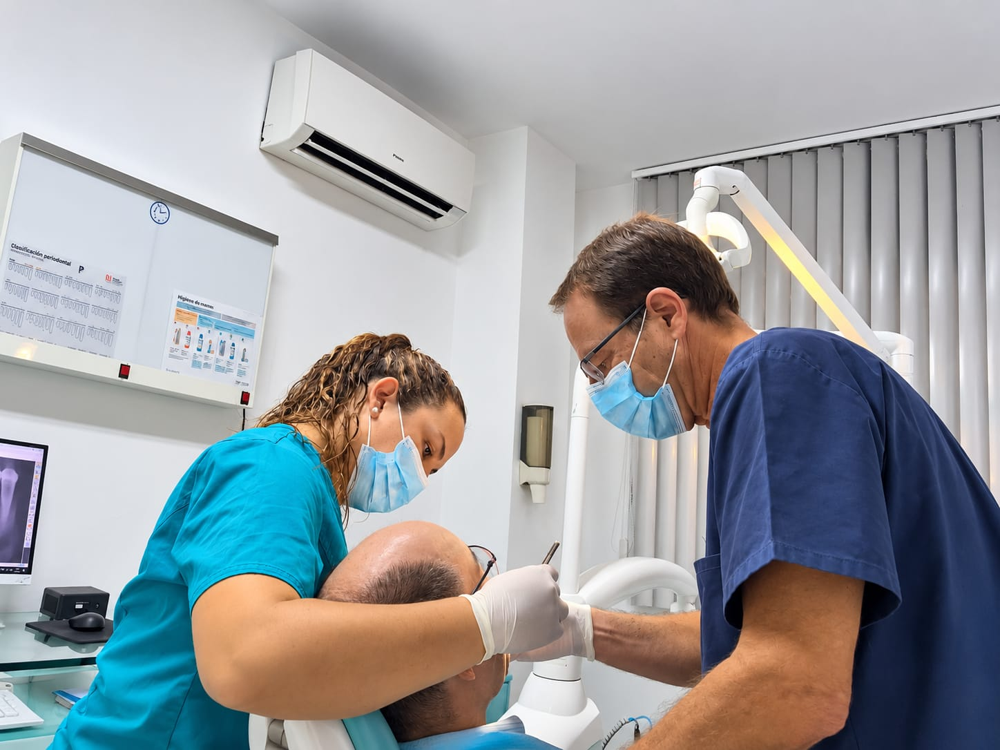
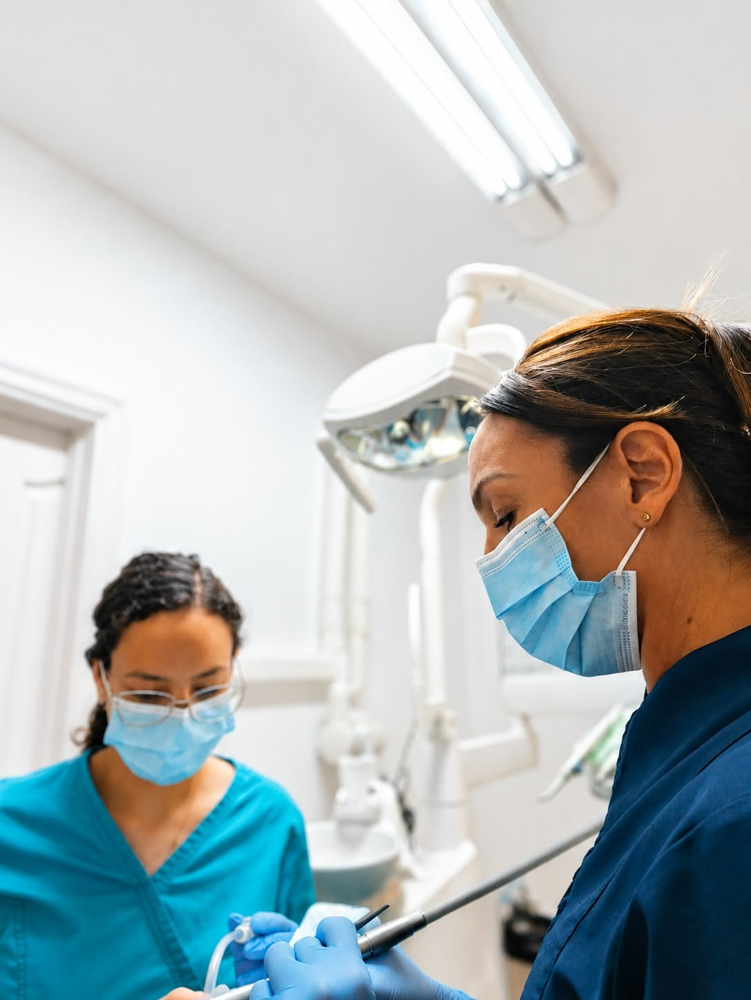
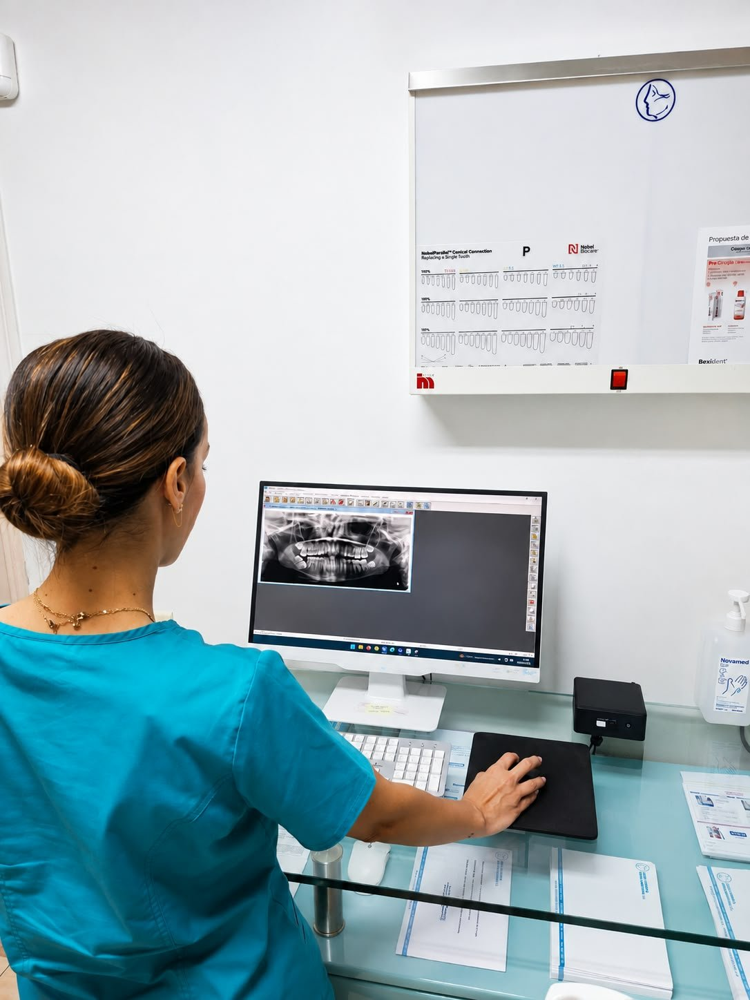
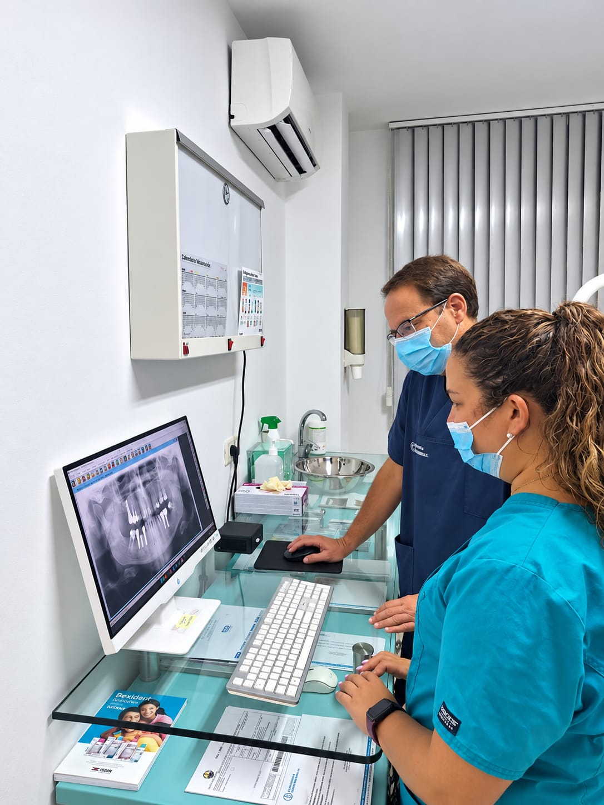
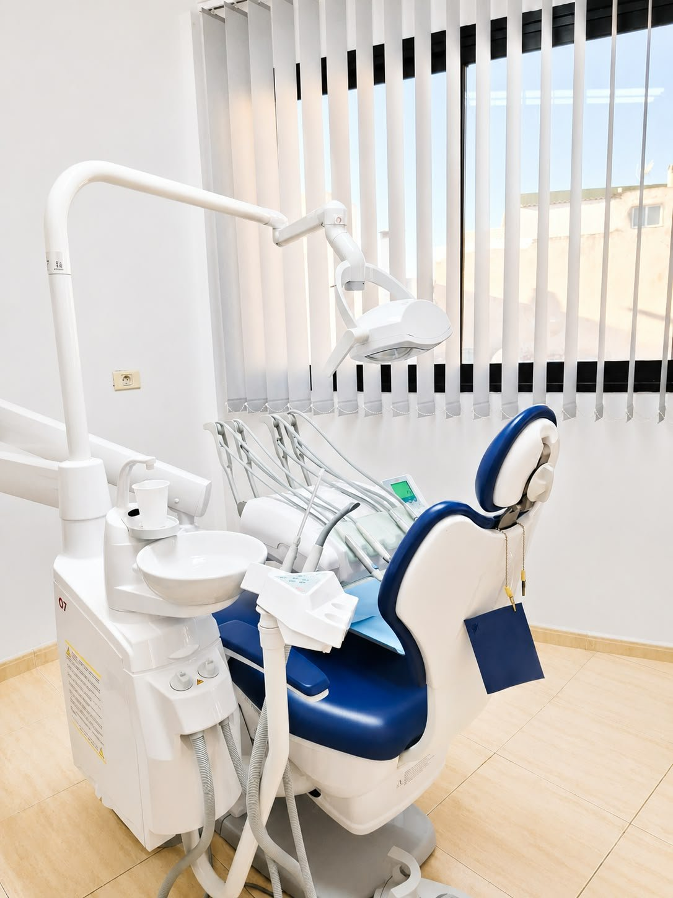
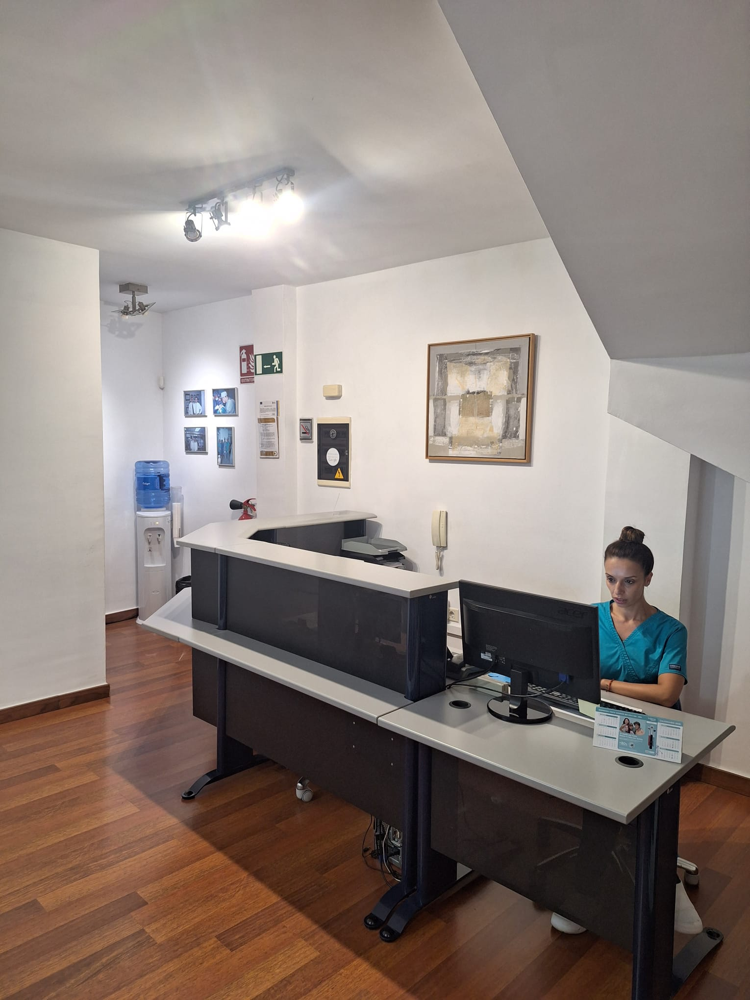

Escucha
Nos interesa qué notas, desde cuándo y qué esperas conseguir.
Creemos en una odontología rigurosa, comprensible y cercana. El objetivo no es solo resolver un problema: también ayudarte a entenderlo y prevenir que vuelva.
Salud, función y estética se valoran como partes de un mismo conjunto.
Cada persona llega con una historia, unas expectativas y unas necesidades diferentes. Por eso evitamos soluciones automáticas y empezamos por escuchar.
Un entorno profesional, una conversación sin tecnicismos innecesarios y un plan adaptado a tu situación.
Nos interesa qué notas, desde cuándo y qué esperas conseguir.
La propuesta se apoya en la exploración y en las pruebas que correspondan.
Te damos pautas y revisamos la evolución durante el proceso.
Espacios de consulta, diagnóstico, tratamiento y espera en nuestra clínica de Santa Cruz de Tenerife.













